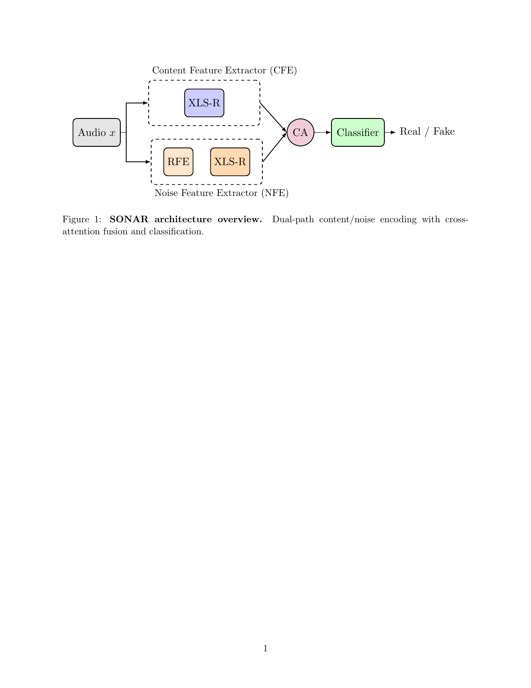
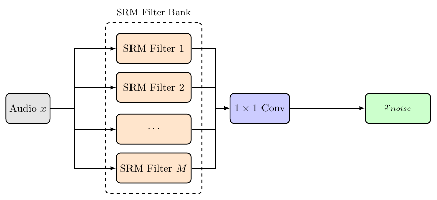
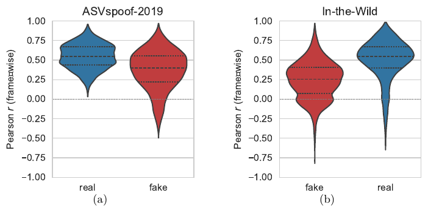
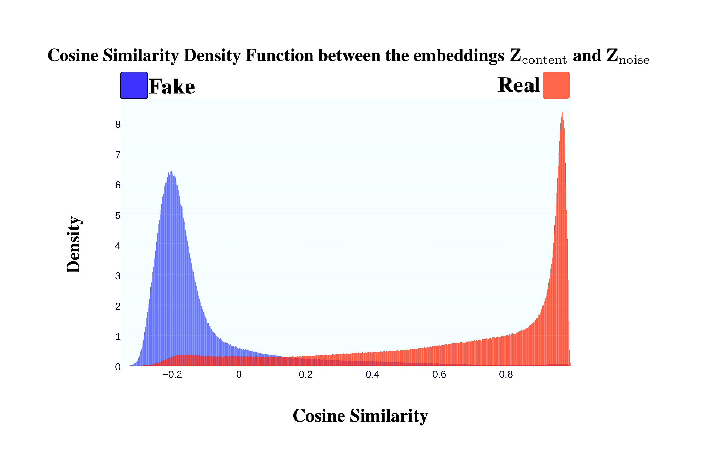
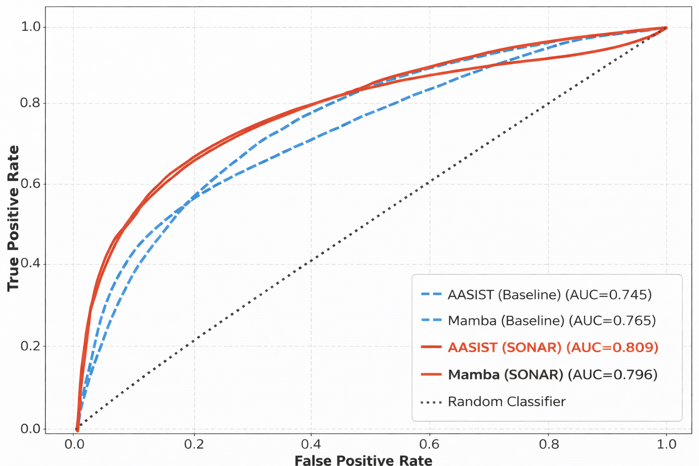
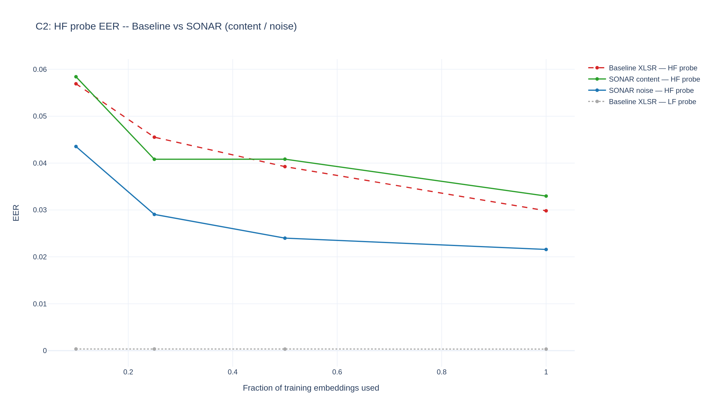
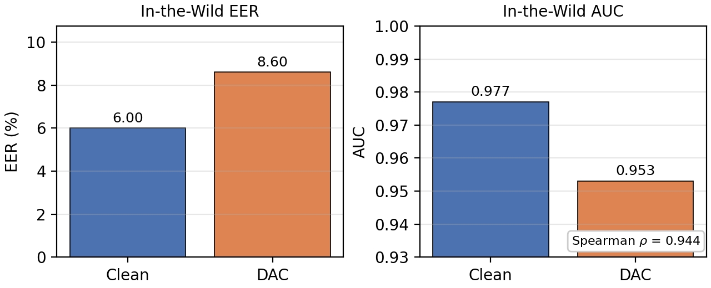

TL;DR
Modern speech-synthesis systems leave subtle high-frequency (HF) artifacts that frequency-agnostic detectors ignore — a manifestation of spectral bias. SONAR is a dual-path detector that fuses an XLSR content branch with a parallel branch driven by learnable, value-constrained SRM high-pass filters, and trains them with a Jensen–Shannon alignment loss that pulls genuine LF/HF representations together while pushing fake ones apart. SONAR achieves single-run state-of-the-art on ASVspoof 2021 and In-the-Wild, converges 4× faster than strong baselines, and degrades gracefully under codecs and bandwidth shifts.
Architecture


Headline results
| Model | DF EER ↓ | LA EER ↓ | In-the-Wild EER ↓ |
|---|---|---|---|
| XLSR + AASIST (baseline) | 3.69 | 1.90 | 10.46 |
| XLSR-Mamba | 1.88 | 0.93 | 6.71 |
| SONAR-Full | 1.57 | 1.55 | 6.00 |
| SONAR-Finetune | 1.45 | 1.20 | 5.43 |
Key findings
- Spectral bias is a generalisation bottleneck. When low-frequency content is removed (high-pass > 4 kHz), baseline models collapse to 32% EER while SONAR retains 26% — direct evidence the baseline relies on LF correlations, while SONAR captures genuine HF artifacts.
- The gain is alignment, not capacity. A dual-encoder model without RFE or JS scores 8.91% on ITW; full SONAR scores 6.00% with the same parameter count.
- 4× faster convergence. SONAR-Full stabilises in 12 epochs (Tak et al. trained 100); SONAR-Finetune in 4–6 epochs.
- Robust to codecs. Through MP3, Opus, Vorbis, and the DAC neural codec, score ranking is preserved (Spearman ρ = 0.944 for DAC).
- 2× FLOPs, 2× params, but only ~25% wall-clock overhead because the two encoders run concurrently on GPU (29 ms → 57 ms / 4-s clip).
- SONAR's noise branch carries the HF discriminative load. Probing the two SSL branches separately on HP-filtered embeddings: the noise branch's HF-probe EER is 2.16% at full data vs 2.98% for the baseline (28% relative reduction); the content branch stays on par with the baseline. The encoder isn't retrained out of its spectral bias — SONAR compensates for it architecturally.
Figures





Citation
@inproceedings{hidekel2026sonar,
title = {{SONAR}: Spectral-Contrastive Audio Residuals for Generalizable Deepfake Detection},
author = {Hidekel, Ido Nitzan and Lifshitz, Gal and Cohen, Khen and Raviv, Dan},
booktitle = {Proceedings of the 43rd International Conference on Machine Learning (ICML)},
year = {2026}
}